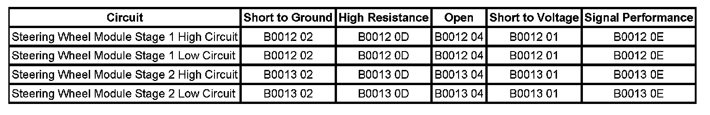

B0012
DTC B0012 or B0013
DIAGNOSTIC INSTRUCTIONS
- Perform the Diagnostic System Check - Vehicle prior to using this diagnostic procedure. Initial Inspection and Diagnostic Overview
- Review Strategy Based Diagnosis for an overview of the diagnostic approach.
- Diagnostic Procedure Instructions provides an overview of each diagnostic category.
DTC DESCRIPTORS
DTC B0012 01
Driver Frontal Deployment Loop Stage 1 Short to Battery
DTC B0012 02
Driver Frontal Deployment Loop Stage 1 Short to Ground
DTC B0012 04
Driver Frontal Deployment Loop Stage 1 Open Circuit
DTC B0012 0D
Driver Frontal Deployment Loop Stage 1 Resistance Above Threshold
DTC B0012 0E
Driver Frontal Deployment Loop Stage 1 Resistance Below Threshold
DTC B0013 01
Driver Frontal Deployment Loop Stage 2 Short to Battery
DTC B0013 02
Driver Frontal Deployment Loop Stage 2 Short to Ground
DTC B0013 04
Driver Frontal Deployment Loop Stage 2 Open Circuit
DTC B0013 0D
Driver Frontal Deployment Loop Stage 2 Resistance Above Threshold
DTC B0013 0E
Driver Frontal Deployment Loop Stage 2 Resistance Below Threshold

DIAGNOSTIC FAULT INFORMATION
CIRCUIT/SYSTEM DESCRIPTION
During a frontal crash of sufficient force the inflatable restraint sensing and diagnostic module (SDM) will allow current to flow through the deployment loop in order to deploy the steering wheel module. The SDM performs continuous diagnostic tests on the deployment loops to check for proper circuit continuity and for shorts to ground or voltage.
There are 2 shorting bars used within the steering wheel module coil connector which will short together both steering wheel module stage 1 high circuit and steering wheel module stage 1 low circuit and both steering wheel module stage 2 high circuit and steering wheel module stage 2 low circuit when the connector is disconnected. This will help to prevent unwanted deployment of the inflator module during servicing.
CONDITIONS FOR RUNNING THE DTC
Ignition voltage is between 9-16 volts.
CONDITIONS FOR SETTING THE DTC
B0012 01 Stage 1 or B0013 01 Stage 2
The steering wheel module high and/or low circuit is short to voltage for 120 milliseconds.
B0012 02 Stage 1 or B0013 02 Stage 2
The steering wheel module high and/or low circuit is short to ground for 120 milliseconds.
B0012 04 Stage 1 or B0013 04 Stage 2
The steering wheel module high and/or low circuit is open for 120 milliseconds.
B0012 0D Stage 1 or B0013 0D Stage 2
The steering wheel module deployment loop resistance is more than 5.1 ohms for 120 milliseconds.
B0012 0E Stage 1 or B0013 0E Stage 2
The steering wheel module deployment loop resistance is less than 1.3 ohms for 120 milliseconds.
ACTION TAKEN WHEN THE DTC SETS
- The SDM commands the AIR BAG indicator ON via serial data communications.
- The SIR system is disabled and no deployments are allowed.
CONDITIONS FOR CLEARING THE DTC
- The condition responsible for setting the DTC no longer exists and the scan tool Clear DTCs function is used.
- A history DTC will clear once 255 malfunction-free ignition cycles have occurred.
CIRCUIT/SYSTEM TESTING
IMPORTANT: When removing connectors inspect for damage or corrosion. Damage or corrosion in the following requires repair or replacement of the affected component/connector.
- The pretensioner
- The air bag module
- The SDM module
- The air bag wiring harness connector
- The SDM wiring harness connector
1. Verify that the steering wheel module connector and the connector position assurance (CPA) are engaged.
IMPORTANT: The connector and CPA may seat independent of each other. Both the connector and CPA should seat with an audible and/or tactile click. The CPA isolates the shorting-bars within the connector allowing the deployment circuit to operate properly.
- If the above condition is found, make the appropriate repair.
2. Ignition OFF, disconnect the steering wheel module.
3. With the applicable adaptor, connect special tool J 38715-A.
4. Ignition ON, with a scan tool, verify DTC is set as current.
- If DTC is not set or is set as history, replace the steering wheel module.
5. Ignition OFF, disconnect special tool J 38715-A.
6. Disconnect the steering wheel module coil in-line connector.
7. With the applicable adaptor, connect special tool J 38715-A.
8. Ignition ON, with a scan tool, verify DTC is set as current.
- If DTC is not set or is set as history, replace the steering wheel module coil.
9. Ignition OFF, disconnect special tool J 38715-A and the applicable adaptor.
10. Ignition ON, test for less than 1 volt between the applicable HI circuit and ground.
- If not the specified range, test the circuit for a short to voltage.
11. Test for less than 1 volt between the applicable LOW circuit and ground.
- If not the specified range, test the circuit for a short to voltage.
12. Ignition OFF, test for infinite resistance between the applicable HI circuit and ground.
- If not the specified range, test the circuit for a short to ground.
13. Test for infinite resistance between the applicable LOW circuit and ground.
- If not the specified range, test the circuit for a short to ground.
14. Disconnect the harness connector at the SDM.
15. Test for less then 1 ohm of resistance between the SDM connector and the air bag module connector HI circuit.
- If not the specified range, test the circuit for an open/high resistance.
16. Test for less then 1 ohm of resistance between the SDM connector and the air bag module connector LOW circuit.
- If not the specified range, test the circuit for an open/high resistance.
17. If all circuits test normal, replace the SDM.
REPAIR INSTRUCTIONS
Perform the Diagnostic Repair Verification after completing the diagnostic procedure.
- Inflatable Restraint Steering Wheel Module Coil Replacement
- Inflatable Restraint Steering Wheel Module Replacement
- Control Module References for SDM replacement, setup, and programming. Programming and Relearning Verification Tests